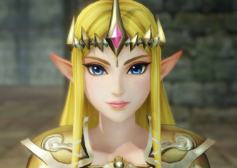

Les premiers
personnages féminins...

Le niveau d'indépendance qu'ont les personnages féminins de leurs homologues masculins, ainsi que leur objectivation sexuelle et leur sexualisation sont souvent les sujets qui animent la controverse.
Au début des jeux vidéo, les femmes n’ont pas une place très flatteuse : les personnages féminins avaient plutôt pour rôle d’offrir aux héros masculins une raison pour partir en quête pour la sauver . Entre la damoiselle en détresse et simple faire-valoir aux formes parfaites, elles n’ont pas toujours l’occasion de prouver qu’elles sont l’égal de l’homme.
Présentées comme acolyte ou accessoire, celles-ci sont reléguées au second plan, cette image tenace va perdurer. Aussi bien le physique des personnages féminins que masculins est exagéré : mais leur modification (particulièrement au niveau du buste) est plus poussée que celle des hommes, et cela encore plus s'ils sont le personnage principal du jeu.
